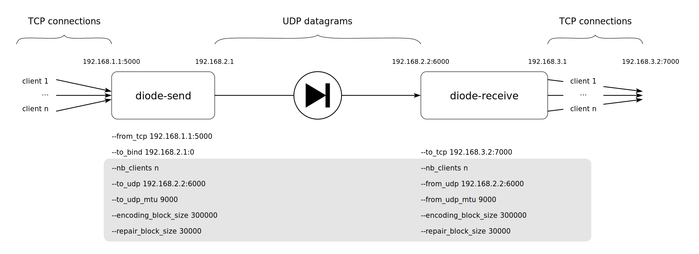

Basic command line parameters
When running diode-send and diode-receive with cargo, command line parameters must appear after after double-hyphen separator. For example, to display all available options for the sender part:
$ cargo run --release --bin diode-send -- --help
Overview
Here is a diagram of the components involved in an example usage of lidi, annotated with command line parameters:
TO BE UPDATED (command line parameters & ports to be updated)
Note
Parameters that are displayed in the gray box must be the same of both sides (sender and receiver) of lidi.
Session
A session is a TCP connection opened on sender side, by an application, in order to send data. A session (the TCP connection) can be used to send any type of data, for instance one or multiple files. The application (not lidi) is responsible of managing a specific protocol to send data and metadata (for instance the content of a file and the filename). Lidi only manages session’s start or end. On the receiver side, lidi diode-receive will open and close TCP sessions to a receiver application (like diode-receive-file), in respect of happened on sender side. Due to technical constraints, the sender must close the session when data transfer is done. The sender side cannot keep TCP connections opened without sending any data, for instance to reuse it later. Application must open a TCP connection, send data, then close it. Lidi receiver will automatically close unused session after some time (see the Timeouts chapter for more details on how to configure session’s timeout).
Following, we provide some details about each command line options.
Adresses and ports
As shown in the Getting started chapter, default values work well for testing the diode on a single machine. But for real application, ip addresses and ports must be configured properly. There are three points in the diode chain where those settings should be provided.
TCP data source
The diode-send side gets data from TCP connections (for instance, to receive data from diode-send-file). It is necessary to specify IP address and port in which TCP connections will be accepted with the following parameter:
--bind-tcp <ip:port>
Default value is 127.0.0.1:5001.
TCP data destination
On the diode-receive side, data will be sent to TCP connected client (for instance, to connect to diode-receive-file). To specify listening IP and TCP port:
--to-tcp <ip:port>
Default value is 127.0.0.1:5002.
UDP transfer
UDP transfer is used to transfer data from diode-send and diode-receive. Settings IP address and UDP port is necessary. On the sender side:
--to-udp <ip:port>
There is no default value for this, it has to be set to IP of the server running diode-receive.
--bind-udp <ip:port>
Default value is 0.0.0.0:0.
On the receiver side, the option:
--bind-udp <ip:port>
There is no default value for this, it has to be set to the same value than –to-udp (diode-send).
Timeouts
Since lidi uses UDP protocol to transfer data, blocks and datagrams have to be reordered at application level. Link is unidirectionnal, so there is no way to ask for status or retransmission. Lidi receiver’s side has to make choices depending on what it receives. Of course, there are start and end of streams markers, but when packets are missing and arrives in any order, it is difficult to be sure of what happens.
Thus, there are two configurable timers in lidi diode-receive. One is used to decide when to force reassembly of the current block. If we miss parts of the current block and no more packet is received during ‘flush-timeout’ delay, we force decoding the current block with data received (this may fail if too many parts are missing).
--flush-timeout <nb_milliseconds>
(receiver side, default: 500)
The second is used to decide when to force closing a current session transfer.
--session-expiration-delay <seconds>
(receiver side, default: 5)
Heartbeat (NOT IMPLEMENTED)
Since the purpose of the diode is to only allow one-way data traffic, the sender cannot be aware if a receiver is set up or not. But heartbeat messages are regularly sent through the diode so that the receiver can be aware of a sender disconnection. Heartbeat times can be set with the following option on both sides:
--heartbeat <nb_milliseconds>
The default value is 100 milliseconds for the sender (i.e. a heartbeat message is sent every 5 seconds) and 200 milliseconds for the receiver (i.e. warnings are displayed whenever during 10 seconds no heartbeat message was received). Due to latency, timeouts and network load, the receiver value must always be greater than the sender value.
Further heartbeat implementation could be used to allow application to keep his TCP connection active, even it is not used to send data.